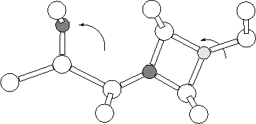

Another proposal for the STD structure was based on the possibility that the electrically inactive NNO defect was actually bistable, and had a singly charged alternative structure with shallow donor properties [213] (see Figure 8.5). Initial investigations using PM3-CCM semi-empirical methods proved promising [180]. We therefore investigated this using the same clusters as used for the NNO work in both the neutral and +1 charge states.
|  |
| Charge | PM3-CCM | AIMPRO | AIMPRO using PM3-CCM |
| State | relaxed structure | ||
| +1.27 | * | +6.09 | |
| +1 | -1.18 | +3.97 | +1.96 |
Both the standard NNO structure (Section 7.4) and the new proposed alternative were relaxed in the neutral and +1 charge states. The original NNO structure was the most stable in both charge states; the neutral N-ON spontaneously restructured to form NN-O with no barrier. In the positive charge state NO-N+, although metastable, was 3.97 eV higher in energy than NN-O+. This suggests that contrary to the previous results from PM3-CCM calculations[214], we find that NON(+) is not a stable form of the NNO system, and is not predicted to occur in real systems in either the neutral or +1 charge state. In addition it does not display the correct C2v defect symmetry, and in light of these results we rule it out as a possibility for the STD.